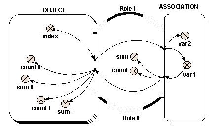

Two role arrows – one submodel
The most common use of the role arrow is (unfortunately) the most difficult to visualise. In this case, two different instances of the same object play two different roles in an association. One might think of this as being like each instance having all the other instances nested within it.
In the case of the single role arrow, or the case of two role arrows from two objects, the role itself was not an important element. The role arrow represented graphically the nesting arrangement. In this case however, the names of the two different role arrows are the only means of distinguishing the instances of the single object within the association submodel.
The following model diagram illustrates a simple example of the use of the association submodel in this way. There is an “Object” submodel, which has three instances. Two role arrows, “Role I” and “Role II”, link “Object” to the “Association” submodel.

In this case, nine instances of “Association” are created, one for each possible pair of instances of “Object”. Inside “Association” are two variables “var1” and “var2”. Each of these receives a single influence arrow from the “index” variable in “Object”, BUT, look at the list of parameters in the equation dialogue box, and two are given. These two parameters refer to the “index” variable in each of the members of the pair of instances of “Object” that generate this instance of “Association”.
A unique local name for each parameter is automatically generated, but to avoid confusion, right click on each local name to rename it indexI and indexII, for “Value(s) of ../Object/index (from Object in Role I)” and “Value(s) of ../Object/index (from Object in Role II)” respectively. In this example, “var1” is given the expression “indexI” and “var2” is given the expression “indexII”.
If this were represented as a table, it would look like this:
|
|
Object in Role I “indexI” = 1 |
Object in Role I “indexI” = 2 |
Object in Role I “indexI” = 3 |
|
Object in Role II “indexII” = 1 |
var1 = 1 var2 = 1 |
var1 = 2 var2 = 1 |
var1 = 3 var2 = 1 |
|
Object in Role II “indexII” = 2 |
var1 = 1 var2 = 2 |
var1 = 2 var2 = 2 |
var1 = 3 var2 = 2 |
|
Object in Role II “indexII” = 3 |
var1 = 1 var2 = 3 |
var1 = 2 var2 = 3 |
var1 = 3 var2 = 3 |
So far, the results are rather similar to those where two objects are involved. This is also true of what follows, though it is less obvious. To understand how “var1” is represented, six influence arrows are drawn from it to different parts of the diagram. (Symmetrical results are generated using “var2”, though these are not given here.)
· Inside “Object”, “var1” again appears as two distinct parameters, distinguished by the name of the role arrow. Alter the local names to “var1_I” and “var1_II” for “Value(s) of ../Association/var1 (to Object in Role I)” and “Value(s) of ../Association/var1 (to Object in Role II)” respectively, as before. Look at the full nine-instance table above to determine the values of “var1_I” and “var1_II”, by reading across (for “Role II”) or down (for “Role I”) the relevant line.
|
|
var1_I |
var1_II |
||||
|
|
value |
count |
sum |
value |
count |
sum |
|
Instance 1 |
{1 1 1} |
3 |
3 |
{1 2 3} |
3 |
6 |
|
Instance 2 |
{2 2 2} |
3 |
6 |
{1 2 3} |
3 |
6 |
|
Instance 3 |
{3 3 3} |
3 |
9 |
{1 2 3} |
3 |
6 |
· Outside “Object”, “var1” has the value {1 1 1 2 2 2 3 3 3} and thus count({var1}) is 9 and sum({var1}) is 18. Note that values from all nine instances of “Association” are received by elements outside “Object”.
The  condition symbol can be used inside
“Association” to permit fewer instances than the square of the number of
instances of “Object” to be generated.
The index(x) function returns
the index of each of the members of the pair of instances that generate this
instance of “Association” with x = 1
for “Dimension 1 of Object (3) in Role II for Association” and x = 2 for “Dimension 1 of Object (3) in
Role I for Association”. Note that the
“(3)” is the size of the given dimension.
Influences from other elements can also be used in the Boolean
expression for the condition symbol.
condition symbol can be used inside
“Association” to permit fewer instances than the square of the number of
instances of “Object” to be generated.
The index(x) function returns
the index of each of the members of the pair of instances that generate this
instance of “Association” with x = 1
for “Dimension 1 of Object (3) in Role II for Association” and x = 2 for “Dimension 1 of Object (3) in
Role I for Association”. Note that the
“(3)” is the size of the given dimension.
Influences from other elements can also be used in the Boolean
expression for the condition symbol.
In : Contents >> Model diagram elements >> Role arrows